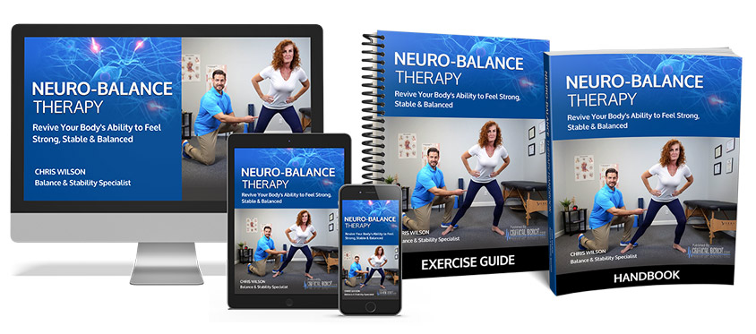
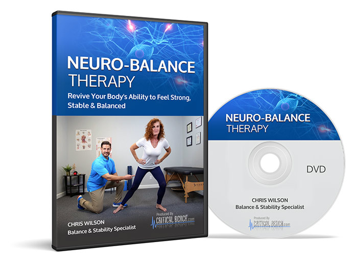

The Unseen Devastation of Falling: How a Simple Slip Can Steal Senior Independence
A certified balance specialist has developed a program based on Harvard foot nerve research that's helping older Americans regain stability and walk with confidence again. We investigated the science behind it and talked to real users.
See why 112,000+ people are using this fall-prevention program
See Current Offer → — Health & Consumer Desk
Updated March 24, 2026
10 min read
— Health & Consumer Desk
Updated March 24, 2026
10 min read

Senior Independence: A Fragile Balance
As we age, the fear of falling becomes a constant companion, casting a dark shadow over once-independent lives. The thought of losing our autonomy, our freedom, and our sense of self is a daunting prospect. For many seniors, the fear of falling is a reality that leads to a loss of independence, forcing them into assisted living or relying on family members for even the simplest tasks.
- Losing the ability to drive, to shop alone, or to tend to our own gardens – these are the indignities that many seniors face.
- The loss of independence is not just a physical reality, but an emotional one as well.
- It's the feeling of being a burden to loved ones, of being unable to perform the tasks that once brought us joy.
- It's the loss of identity, of purpose, and of autonomy.
The statistics are staggering: falls are the leading cause of death among seniors, and one in four seniors will experience a fall each year. The consequences are devastating: broken bones, hospitalizations, and even loss of life.
A Solution: Neuro-Balance Therapy
But what if there was a way to regain stability, to regain confidence, and to regain independence? Enter Neuro-Balance Therapy, a 10-second daily ritual that has helped over 112,000 seniors regain their balance and live life to the fullest.
Based on Harvard foot nerve research, Neuro-Balance Therapy works by stimulating the nerves in the feet that control balance and movement. By doing so, it helps to strengthen the connections between the feet, brain, and body, resulting in improved balance, reduced risk of falls, and a newfound sense of confidence.
A Story of Determination
Mary, a widow in her early seventies, had always been fiercely independent. She lived on her own, gardened, cooked, and even drove to the grocery store every week. But after a series of falls, Mary found herself facing a harsh reality: she could no longer live on her own.
Desperate to regain her independence, Mary sought out Neuro-Balance Therapy. At first, she was skeptical – 10 seconds a day? How could something so simple possibly make a difference? But Mary was determined to try anything to regain her freedom.
For 10 seconds each day, Mary stood on a specialized mat that stimulated her foot nerves. At first, it felt a bit strange, but as the days went by, Mary began to notice a difference. She felt more stable, more confident, and more like herself.
Within a few weeks, Mary was able to walk independently, without the aid of a walker or cane. She began to garden again, cook for herself, and even started driving to the grocery store once more.
Mary's story is not unique – thousands of seniors have regained their independence with Neuro-Balance Therapy. And it's not just about physical balance – it's about regaining confidence, autonomy, and a sense of self.
Regain Your Independence
If you or a loved one is struggling with the fear of falling, don't lose hope. Neuro-Balance Therapy offers a glimmer of hope, a chance to regain independence and live life to the fullest.
Take the first step today – learn more about Neuro-Balance Therapy and how it can help you or your loved one regain stability and independence.
Remember, independence is not just a right – it's a gift. And with Neuro-Balance Therapy, you can have it back.


Neuro-Balance Therapy
The 10-second fall-prevention ritual backed by Harvard nerve research. 112,000+ users.
See Current Offer →
Neuro-Balance Therapy includes DVD, spike ball, digital access, and home safety guide.
View Official Website → From $37 — 60-day guarantee
If you or someone you love lives with the fear of falling, Neuro-Balance Therapy is one of the most evidence-based and accessible fall-prevention solutions available. The Harvard-backed research, 112,000+ users, and 60-day guarantee make it worth trying.
DVD + spike ball + digital access. 60-day money-back guarantee.
Access Neuro-Balance Therapy Now → From $37 — 60-day money-back guarantee